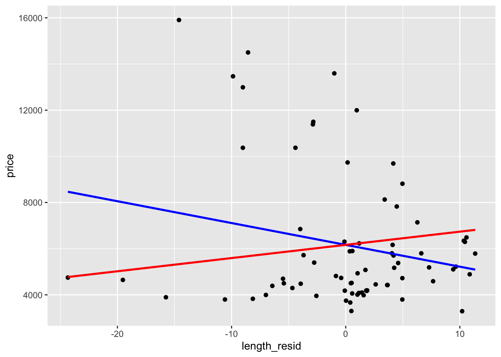

Curso de Inferência Causal
2025-03-19
Capítulo 1 Introdução
Aqui pretendo guardar minhas notas de aula para meu curso de causalidade na pós-graduação. É uma forma de organizar e sistematizar meu estudo sobre o tema.
1.1 Revisão de Regressão
Comecemos pelo model ode regressão populacional dado por: \[y = \beta_0 + \beta_1 x + u\]
As suposições básicas do modelo são: 1. Sem perda de generalidade: \(\mathbb{E}[u] = 0\) 2. Independência na média do erro: \(\mathbb{E}[u|x] = \mathbb{E}[u]\). Essa é a suposição mais consequente do modelo de regressão. Como é sobre o termo de erro, não é testável. Um exemplo é útil para entender o que significa essa suposição. Suponha que estamos interessado no efeito do gasto de campanha (\(x\)) sobre o voto (\(y\)). O termo de erro \(e\) seria a qualidade da candidata, não observável. A suposição implica então que, a qualidade média das candidatas que gastam 100 mil reais é a mesma das que gastam 500 mil e um milhão (e assim por diante. Se candidadas melhores arrecadam mais dinheiro e, portanto, gastam mais, a suposição foi violada. 3. Conectando 1 e 2, temos: \(\mathbb{E}[u|x] = 0\). Essa suposição é chamada de “média condicional zero” ou “esperança condicional zero” do termo de erro. Ela implica que: \(\mathbb{E}[y|x] = beta_0 + \beta_1 x\). Essa equação é chamada de Conditional Expectation Function, ou CEF.
De posse de uma amostra aleatória simples, nós podemos derivar os estimadores de mínimos quadrados (MQO ou OLS na sigla em inglês). Vou pular os passos da derivação. PAra nós, o importante é lembrar a fórmula do \(\hat{\beta_1}\):
\(\hat{\beta_1} = \frac{\text{covariância amostral}}{\text{variância amostral}} = \frac{\sum_{i=1}^n(x_i - \bar{x})(y_i - \bar{y})}{\sum_{i=1}^n(x_i - \bar{x})^2}\) E \(\hat{\beta_0} = \bar{y} - \hat{\beta_1}\bar{x}\).
Podemos então demonstrar que o estimador é não-viesado. Para isso, é necessário supor que o modelo é linear nos parâmetros (não nas variáveis), temos uma amostra aleatória simples da população, existe variância no preditor (para não dividir por zero na fórmula do estimador de OLS) e a média condicional zero.
1.1.1 Teorema da Anatomia da Regressão
Esse teorema, também conhecido como teorema de Frisch, Waugh e Lovell ou Frisch-Waugh-Lovell. Ele é útil para ajudar a entender regressão múltipla. Suponha que nosso modelo possui \(2\) preditores:
\(y_i=\beta_0+\beta_1 x_{1i}+ \beta_2 x_{2i}+ +e_i\).
Agora, suponha que, em vez de rodar a regressão acima, eu rodo uma regreessão (chamada de auxiliar) em que \(x_1\) é a variável dependente, e \(x_2\) o único preditor.
\(x_{1i}=\gamma_0+\gamma_{1}x_{1i} + f_i\).
E os resíduos são dados por: \(\tilde{x}_{1i}=x_{1i} - \widehat{x}_{1i}\). Então, é possível mostrar que: \(\beta_1 = \frac{C(y_i, \tilde{x}_{1i})}{V(\tilde{x}_{1i})}\). O que essa fórmula nos diz é que o efeito de \(\beta_1\) é a covariância entre a variável dependente e o resíduo da regressão auxiliar, isto é, a parte de \(x_1\) não explicada pelos demais preditores.
Vamos visualizar essa relação com um exemplo do livro do Scott Cunnigham.
## ── Attaching core tidyverse packages ──────────────────────── tidyverse 2.0.0 ──
## ✔ dplyr 1.1.4 ✔ readr 2.1.5
## ✔ forcats 1.0.0 ✔ stringr 1.5.1
## ✔ ggplot2 3.5.1 ✔ tibble 3.2.1
## ✔ lubridate 1.9.3 ✔ tidyr 1.3.1
## ✔ purrr 1.0.4
## ── Conflicts ────────────────────────────────────────── tidyverse_conflicts() ──
## ✖ dplyr::filter() masks stats::filter()
## ✖ dplyr::lag() masks stats::lag()
## ℹ Use the conflicted package (<http://conflicted.r-lib.org/>) to force all conflicts to become errorslibrary(haven)
read_data <- function(df) {
full_path <- paste0("https://github.com/scunning1975/mixtape/raw/master/",
df)
haven::read_dta(full_path)
}
auto <-
read_data("auto.dta") %>%
mutate(length = length - mean(length))
lm1 <- lm(price ~ length, auto)
lm2 <- lm(price ~ length + weight + headroom + mpg, auto)
lm_aux <- lm(length ~ weight + headroom + mpg, auto)
auto <-
auto %>%
mutate(length_resid = residuals(lm_aux))
lm2_alt <- lm(price ~ length_resid, auto)
coef_lm1 <- lm1$coefficients
coef_lm2_alt <- lm2_alt$coefficients
resid_lm2 <- lm2$residuals
y_single <- tibble(price = coef_lm2_alt[1] + coef_lm1[2]*auto$length_resid,
length_resid = auto$length_resid)
y_multi <- tibble(price = coef_lm2_alt[1] + coef_lm2_alt[2]*auto$length_resid,
length_resid = auto$length_resid)
auto %>%
ggplot(aes(x=length_resid, y = price)) +
geom_point() +
geom_smooth(data = y_multi, color = "blue") +
geom_smooth(data = y_single, color = "red")## `geom_smooth()` using method = 'loess' and formula = 'y ~ x'
## `geom_smooth()` using method = 'loess' and formula = 'y ~ x'
1.2 Inferência
Como sabemos, inferência lida com a generalização da amostra para população e, portanto, com a variabilidade inerente de amostra para amostra. Eu não vou revisar aqui os cálculos para derivar o erro padrão. Quero apenas enfatixzar dois pontos que não são usualmente abordados em cursos de regressão. Em pirmeiro lugar, generalização da amostra para a população é diferente de generalização causal, também conhecido como validade externa. Esse ponto foi confundido por muitos autores, em particular o livro conhecido como KKV, e levou muitos pesquisadores a acreditarem que uma regressão possuia maior capacidade de generalização causal do que estudos de caso. Uma regressão (supondo que o erro padrão foi calculado corretamente) permite generalizar as estimativas para uma população. Porém, o que significa falar em generalização quando temos o universo de casos (por exemplo, todos os deputados, ou todos os candidatos, ou todos os municípios)? Quando temos o universo não é diferente de estudos de caso que possuem todos os casos relevantes e, portanto, noção de generalização da amostra para população não se aplica. O que me leva ao segundo ponto: na inferência causal, em particular nesses casos em que temos o universo dos casos, ainda assim possui incerteza. O trabalgo de Abadie et. al (2020) discute a ideia de design-based inference. Nós vamos explicar no curso em mais detalhes o que é uma pesquisa design-based (em oposição a model-based). A ideia desse tipo de incerteza (e seu correspondendo erro-padrão) é a seguinte. Imagine que estamos interessados em estimar o efeito causal da reeleição de prefeitos sobre corrupção municipal. Suponha que tenho todos os municípios na amostra. Por fim, suponha que temos um experimento natural de forma que podemos supor que (talvez condicional a algumas variáveis) a reeleição é aleatória. Não há incerteza amostral para a população, mas há incerteza sobre o que aconteceria com a corrupção para os prefeitos reeleitos, caso não fossem reeleitos (e para os que perderam, como seria a corrupção caso fossem reeleitos). Em particular, se acreditamso que a reelição foi aleatória, então uma nova rodada de amostragem (em um universo alternativo?) produziria outra configuração de prefeitos reeleitos e não-reeleitos e, alguma variação na estimativa do efeito causal. Isso antecipa nossa discussão sobre causalidade da próxima aula, mas o ponto é que existe incerteza na variação do efeito causal, que não deriva de variação amostral propriamente, mas da alearotidade da intervenção.
O que me leva de volta ao ponto anterior sobre a comparação entre estudos de caso e métodos quantitativos, quando o objetivo é inferência causal. A incerteza inerente é sobre o efeito da intervenção, não sobre variações amostrais. Além disso, em ambos os casos não sabemos (a princípio) se os estudos possuem validade externa, isto é, se os resultados valem para outras populações, no tempo e espaço. É preciso avançar nessa agenda, tanto em métodos quali como quanti. É um problema em aberto e que tem atraído muitas pesquisas novas, que não iremos cobrir no curso (até por desconhecimento meu de boa parte dessa literatura).